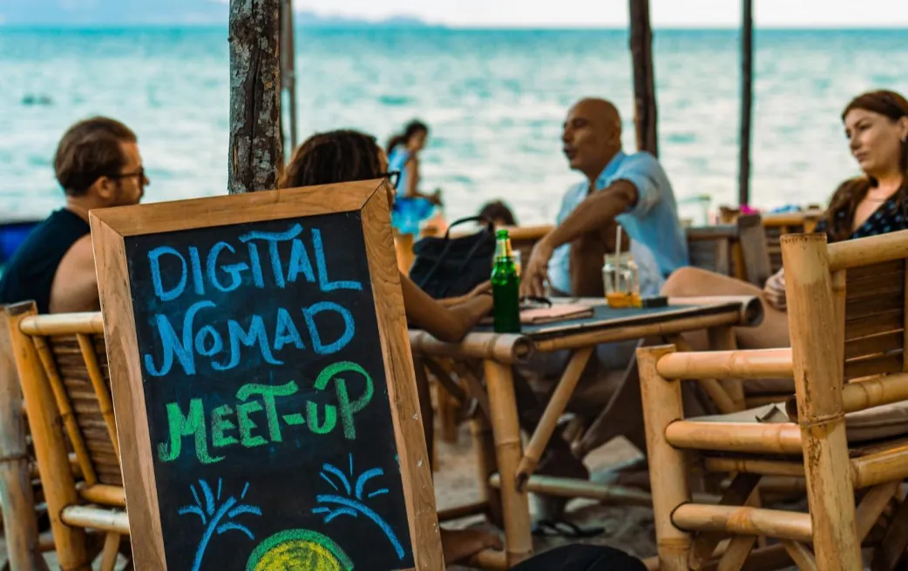
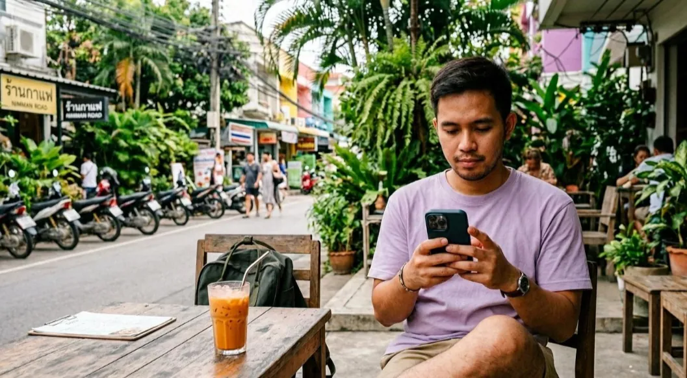
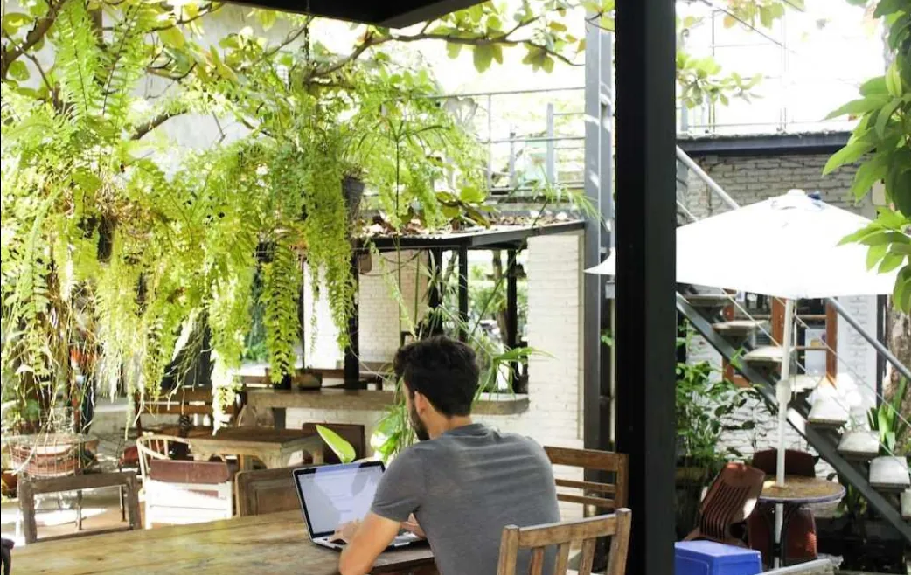

ATMOSPHERE
海辺のカフェ、路地のコーヒースタンド、コワーキング。働く場所は、日によって変わります。


LOCAL
カフェ、コワーキング、住まい、移動の工夫。滞在した人の実体験をもとに、地域の情報を分かち合います。
PEOPLE
同じように働き、旅する人と出会える場所に。グループでの交流を中心に、無理のない関わり方を大切にします。

INFO
回線、保険、仕事の探し方。ノマドとして暮らすための情報を、持ち寄って整理します。
※共有される情報は個人の経験であり、正確性を保証するものではありません。
HOW IT WORKS
承認を保証するものではありません。回答の目安は、申請から7日以内です。
POLICY
安心して情報を交換できる場所を保つため、参加は申請と審査で行います。審査は、実在の人物であること、規約への同意、営業・勧誘目的でないことを、中立的に確認するものです。